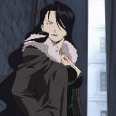

Forums galactiques > Taverne galactique : lieu de discussion informel > Le Bar Ar Droch
Pages : 1 2
| Diaoul Réputation à la taverne : 137  26/02 ETU 20:36 | Score : 6 Détails Un bar-restaurant tout neuf, qui sentait encore le sapin frai, venait d’ouvrir ses portes au grand public.
Il était petit, convivial, avec quelques tables par-ci par là et un petit bar derrière le quel était assis un Korrigan. Il dit aux nouveaux venus : Devez mat à toutes et à tous ! Ce bar est ouvert dans la plus pure tradition bretonne ! Une affiche était placardée à l’entrée. Menu du jour : ----------------18£ Entrée : pâté hénaff Plat de résistance : Kig afarz Dessert au choix : Kouing a mann, far breton aux pruneaux ou glace. Les crêpes: Salées :----------------------------------------------Sucrées :-------------------------------- ------------------------------------------------------------------------------------------------------- Jambon œuf-------------------------5£----------Chocolat---------------------------------4£ Jambon œuf fromage-------------6£----------Pomme ou banane-------------------5£ Complète----------------------------9£-----------Pomme caramel-----------------------5£ Forestière----------------------------8£-----------Flambée---------------------------------7£ Dolmen------------------------------10£----------Crêpe au Kouing a mann ----------8£ Campagnarde-----------------------9£----------Confiture (au choix)-----------------4£ Fruits de mer-----------------------11£----------Menhir (chantilly)---------------------6£ Korrigan-----------------------------12£--------- Bigoudène (chantilly chocolat)----8£ Fruits de mer: Moules(l‘assiette)--------------5£ Huîtres----------------------------10£ Bigorneaux (le bol)------------8£ Pousse-pieds ------------------12£ Coquille st Jacques-------------9£ Les boissons : _Cidre------------------------------------------------------------14£ _Chouchen (hydromel)---------------------------------------7£ _Bière bretonne-------------------------------------------------5£ _Lambig (digestif à 45°ou 90°)-----------------------------22£ Bon appétit à toutes et à tous ! si quelques mots ou noms bretons vous échappent: http://www.agencebretagnepresse.com/dico/dico.cgi | ||
| Firefly Réputation à la taverne : 106  27/02 ETU 10:21 | Score : 1 Détails Ara et Kailee entrèrent dans le bar Ar Doch, ellesy virent un petit homme aux grands pieds. Une impression de déjà vu, mais elles ne firent comme si elles n'avaient jamais vu de petits hommes aux grands pieds.
Bonjour!!! Comment vous allez? Vous ne voyez pas double Nous sommes jumelles en fait.' Tu t'appelles comment? On peut avoir une table? Il est presque midi et nous commençons à avoir faim. Est-ce que tu as du cidre non-alcoolisé pour accompagner? En fait nous ne buvons pas. | ||
| Diaoul Réputation à la taverne : 137 27/02 ETU 19:13 | Score : 0 Détails Le petit Korrigan les conduisis à une table proche d'une vitrine ou était exposé quelques faïences Quimperoises.
Il leur dit : Désolé, mais je n'ai pas de "cidre non alcoolisé" mesdemoiselles ! Mais, je peut vous proposer un jus de pomme ! Elles acquiescèrent. Le Korrigan ressortis de la cuisine avec deux bols. Je vous ai mis le jus dans un bol, car en bretagne le cidre se boit dans un bol. Et vu que vous m'avez demandé du cidre non alcoolisé, vous avez eu un bol. Puisque vous êtes les premières à entrer ici, vous aurez votre jus, plus deux crêpes gratuitement ! Cadeau de la maison ! Il les laissèrent boire leurs jus de pomme et alla prépare le billard, livré entre temps. | ||
| Mistermore Réputation à la taverne : 550  27/02 ETU 19:46 | Score : 1 Détails "Mistermore qui était assis à une petite table en chêne brut ne pu s'empêcher de lancer quelques mots aux deux personnes assises en face de lui"
faut prendre du cidre doux, si vous aimez pas l'alcool (- de 4%, c'est de l'eau gazeuse) "Voyant le garçon, il voulu commander" Et!!! ul laer bihan Euh!!! non, p'tit Korrigan, une assiette de moule-frite et un pichet de bière bretonne. T'as de la MUTINE ou de la tonnerre de Brest? | ||
| ApTekpsHouT & Co Réputation à la taverne : 22  27/02 ETU 20:01  | Score : 1 Détails ApTekpsHouT et sa fille BasThiaT, par courait les ruelles au hasard dans le but de trouver rapidement de quoi manger.
Lorsque soudain elles entendirent une musique dansante et un sentir un parfum raffiner ApTekpsHouT : Attend, j'ai déjà senti cette odeur quelques part... Qu'est que cela peut être... Peut être des crêpes. ImHoTep, on va mange là... BasThiaT : Oh non, st' plait, ça à l'aire trop naze... Déjà rien que la musique! je sais pas d'où ça sort mais, je te jure par HaThoR, ça à l'aire trop pourris... ApTekpsHouT : Ah ma fille, y a t'il une seule chose que tu ne trouve pas trop pourris... Bon on va entrer... Elle entrairent dans le restaurant une clochette accrocher sur la porte annonça leur arriver. Un petit bonhomme attendait, au contoir, regarda dans la direction de la porte. S'essuya les mains dans un vieux torchon et s'approcha de nos deux NéoEgyptiennes. Le serveur : Bonjours mes dames, puis je vous être utile ? ApTekpsHouT : On peut mangé ? Le serveur : Aucun problème, suivez moi Le petit Korrigan désignia une table à côté de la vitrine... ApTekpsHouT et BasThiaT s'y assirent... BasThiaT : Tu as déjà manger dans ce genre d'endroit? ApTekpsHouT : J'ai y manger deux ou trois fois lorsque j'ai du faire des affaires avec des NéoLéonnard... Se sont des gens très dure en affaire. J'ai du rapidement arrêter de traiter avec eux. Ca ne devenait plus rentable. BasThiaT : Pourquoi les crèpes ne sont pas mise dans les plats du jour? ApTekpsHouT : Les crèpes tu en prend autant que tu veux, elle servent aussi bien d'entrée que de plat de résistance, et de dessert. BasThiaT : Et tu pense commancer par quoi? ApTekpsHouT : Il faut commancer par les blé noir beure... Blé noir, ce sont les crèpe salées. C'est pour connaitre la qualiter de la pate à crèpe. Ensuite tu prend ce que tu veux... Par contre, j'aimerai bien connaitre le grande différence qu'il font entre les complètes et les jambon oeuf fromage? BasThiaT : Ah trop cool, il y a des crèpes flambée! ApTekpsHouT : BasThiaT, c'est la crèpe que l'on flambe, pas le magasin. BasThiaT : Ha, très drôle... Le serveur : Vous avez choisi? ApTekpsHouT : Une blé noir beure, et une jambon oeuf fromage. Puisqu'elle sont moins cher que les complètes Oeuf miroir! Le serveur : Et vous mademoiselle? BasThiaT : Je vais prendre une dolmen, Ca à l'air trop cool s'truc là Le serveur : Et pour la boisson ? BasThiaT : Du Lam... ApTekpsHouT : Du cidre! Le serveur : Une bolée, où la bouteille. BasThiaT : T'in, il nous fais chier avec ces questions celui là! ApTekpsHouT : Du clame BasThiaT.Une bouteille, merci. BasThiaT : Tu aurais du prendre une bolée, ça aurait été moins cher. Radine comme tu es, ça m'étonne. ApTekpsHouT : Voyons BasThiaT, tu ne fera pas une bonne commerçante si tu ne tien pas compte du facteur quantité/prix. BasThiaT : Ha, ca m'aurait étonner aussi tien... Qu'est ce que l'on prend pour le desert. Du Kouing a mann, ça à l'air spé. ce truc! ApTekpsHouT : Houla, je croyais que tu commançait un régime. BasThiaT : Pourquoi c'est calorique? ApTekpsHouT : Alors, liste des ingrédient: - Du beurre salée (à 90% de matière grasse) - Auquel tu rajoute, du beurre... - Et enfin un incorpore l'ingrèdient principale... BasThiaT : Du beurre, d'accord, j'ai compris. ApTekpsHouT : Plus surment une pincé de farine et un Oeuf pour faire tenir le tout... BasThiaT : J'aime pas les pruneaux. Donc le far c'est exclu... Les glaces, c'est pas terrible pour la ligne. Il reste plus grand chose... | ||
| Mc Money Réputation à la taverne : 17 07/03 ETU 19:19 | Score : 2 Détails Mc Money entra dans le restaurant accompagné de quatre esclavo-gouteurs. Il s’approcha d’une table et commença à se laisser tomber dans le vide. Un des quatre hommes plaça une chaise sous les fesses de son maître. Celui-ci ne le remercia pas, prenant cet acte pour quelque chose de tout à fait normal. A près tout, si la planète ce développait c’était bien grâce çà l’argent de son seigneur.
Le seigneur en question tendit le bras vers la gauche, signe qui signifiait qu’il attendait qu’un autre de ses hommes lui tende la carte des menus. Il la regarda rapidement et la lança devant lui. L’homme qui avait du lui la donner du également la ramasser et la rangée. Les trois autres hommes fixaient avec attention la bouche du grand Businessman : « Je veux tout ce qu’il y a de plus cher. -Bien, oh grand maître de l’argent., répondirent-ils tous en chœur. » Puis ils s’éxecutèrent. | ||
| Diaoul Réputation à la taverne : 137 07/03 ETU 21:05 | Score : 1 Détails Lambic : Ouh ! Il n'a pas l'air de rigoler celui-là ! Dit Lambic d'un ton méfiant.
Diaoul: Oui, n'essaye surtout pas de l'énerver, sinon on va encore en prendre plein notre gueule ! Lambic: Ouais... T'as raison... On va pas l'échauffer ! Pour l'instant ! HiHiHi ! Et il disparu derrière le comptoir pour servir au monsieur Mc Money "tout ce qu'il y a de plus cher !" Il revint avec quatre assiettes et deux bouteilles dans les mains. Il marchait de travers et finit par se prendre les pieds dans une chaise mal rangée. KRASHH ! BANG ! GLIIINGG ! WAAAAAAAAHHH !! Dans un hurlement Mc Money se leva, prit le pauvre Korrigan par le col et lui dit : Mc Money : Comment as-tu osé, pauvre larve, faire tomber tout ce-ci sur MOI !! Lambic : HiHiHiHi ! Je m'excuse monsieur Pièce je n'ai pas fait exprès. Mais si vous ne me lâchez pas maintenant, vous le regretterez ! Tout à coup, un éclair projeta le pauvre Mc Money au sol. Ses hommes de main apeurés par ce qu'ils venaient de voir, s'enfuirent, laissant Mc Money tout seul. Diaoul : On vous a prévenus qu'il ne faut pas nous provoquer. Il aurait pu vous faire encore plus de mal, voir même vous tuer ! Sur ces paroles, Mc Money s'enfuit laissant derrière lui les deux Korrigans se moquer de lui. | ||
| GOC one Réputation à la taverne : 4  12/03 ETU 18:54 | Score : 2 Détails * A peine le seuil de la taverne franchit GOC one du eviter Mc Money qui fuya comme si il etait poursuivit par un méchant farfadé!*
§ GOC one: quel drole de personnage celui la!!! on dirait qu'il est traqué par LANCOU ou alors qu'il s'en va sans payer son "croume" *donc de se faite une table était libre.C'etait une bonne grosse table en chene massif avec un banc a "l'ancienne", son plateu portait les stigmates de gros repas de larges. GOC one ne se fit pas prier pour s'y assoir et pour passer commande.* § GOC one: petit korrigan sert moi des produits du terroir brezhouneg s'il te plait | ||
| Diaoul Réputation à la taverne : 137 12/03 ETU 20:27 | Score : 1 Détails Diaoul : Bonjour cher monsieur !
Je vous accompagne jusqu'à cette table ? Mettez-vous à l'aise, je reviens ! Le petit Korrigan alla chercher la carte et revint aussi vite qu'il était venu. Diaoul :Je peux vous proposer un menu du jour, des crêpes ou des fruits de mer ! Sinon, en boisson, vous prendriez quoi ? On a du chouchen, du cidre, de la bière bretonne et de l'eau des Montagnes Noires. Par contre nous n'avons plus de Lambig, Lambic a tout bu ! Une chaise tomba, Lambic apparu en titubant. Lambic : Wéé DiAoul ! C...C'est pas moi qui ai tout b...bu !! Diaoul :Lambic ! Retourne en cuisine, tu détruis l'image de marque de notre bar !! Désolé, c'est juste mon cousin, il n'est pas méchant ! Hé Hé !! | ||
| Mistermore Réputation à la taverne : 550 14/03 ETU 22:12 | Score : 2 Détails "Il était tard pour manger mais l'apprenti de Mistermore, le jeune Fumitsu et lui-même venaient de finir leur séance d'entrainement cotidienne"
Fumitsu : Maître que diriez vou si nous allions manger une crèpe ou deux chez ce cher ami Korrigan. Mistermore : Tu sais Fumitsu la dernière fois j'ai du te ramener sur mon dos." Fumitsu : Sur votre dos, Maître!!! Mistermore : Me traiterais tu de menteur, Fumitsu? Fumitsu : oh, oh non maître mais je ne me rappel plus. Mistermore : et bien, après avoir mangé et bien bu, tu t'es mis dans la tête de faire un concours avec Lambic. Fumitsu : Avec Lambic!!! mais un concours de quoi? Mistermore : Celui qui fini le plus vite son litre de pommeau. Fumitsu : Aîe, Aîe,Aîe!!!! Mistermore : Moi je t'apprends les ARTS MARTIAUX et tu dois savoir que les arts martiaux sont une méthode d'auto-éducation, dont l'objectif est de rendre chaque être humain autonome et capable de prendre la responsabilité de sa propre vie. L'élève n'est jamais éduqué mais apprend, guidé par l'enseignant, à s'éduquer lui-même.Mais avec toi c'est dur. Fumitsu : Ok maitre, bon on ce la mange cette crèpe ou pas? Mistermore : On y va! | ||
| Diaoul Réputation à la taverne : 137 14/03 ETU 22:52 | Score : 2 Détails Diaoul : Salut Mistermore ! Ça va Fumitsu !?
Venez ! Venez ! Lambic ! Viens voir qui est là ! Le petit Korrigan fit dépasser sa tête par la porte et dit : Lambic : Gast ! Mais c'est Mistermore et Fumitsu !! Alors Fumitsu, on se le refais ce concours !? ;) Diaoul : On vous aporte vos crêpes tout de suite les gars !! | ||
| GOC one Réputation à la taverne : 4 30/03 ETU 18:48 | Score : 2 Détails Plongé dans ses pensées et dans la carte GOC one fut ramené à la réalité par la chute de Lambic.
Qu'est ce qu'il tient encore c'ui là,à cette vitesse il va vider la cave de son cousin!!!! Suivant le pichetrolle de regard il aperçut Mistermore. Mais c'est Mistermore et Fumitsu,la derniere fois que je les ai vu ,Fumitsu ressemblait à un terrain de manoeuvre! Voyant la faim se faire il se replona dans la carte. bon alors je vais me prendre un menu du jour et comme boisson vu que la lambig a ete fortement apprecié par Lambic je vais prendre une bonne biére bretonne. | ||
| Diaoul Réputation à la taverne : 137 31/03 ETU 16:55 | Score : 3 Détails Noz : Votre commande arrivera d'ici cinq minutes !
Et la fée s'envola vers la cuisine où s'affairaient Diaoul et Lambic. Noz : Un menu du jour et une bière les gars ! Lambic : D'accord Noz ! Tiens déjà la bière ! Noz essaya de prendre la bière mais elle était trop lourde pour elle et laissa Lambic s'en charger. Lambic : Ben alors ! Je croyais que les fées avaient de la force ! ;) Noz : Oui, mais je suis fatiguée ! J'ai des maux de tête en ce moment ! Enfait j'ai la flemme d'envoyer la bière !^^ Lambic : Hmmm ! Je vois ! Alors tu emmènera le plat ! J'ai plein de boulot en cuisine ! Noz : Tout compte fait, je n'ai plus mal à la tête, j'apporte la bière ! Héhé ! | ||
| Hagal Thorn Réputation à la taverne : 118  31/03 ETU 21:29 | Score : 1 Détails Hagal volait, à la recherche d'un endroit où rencontrer des gens, lorsqu'il vit le bar ard roch, il décida d'y entrer et se dirige vers une table vide, là, il s'assit et cria:
"Je voudrais une assiette de specialité bien de chez vous Diaoul, avec votre boisson la plus chère!" | ||
| GOC one Réputation à la taverne : 4 02/04 ETU 11:49 | Score : 1 Détails Bonjour NOZ comment vas tu? j'espere que ce que tu m'apporte est la hauteur de la reputation de la taverne a travers toutes les galaxies.
| ||
| Hagal Thorn Réputation à la taverne : 118 02/04 ETU 15:57 | Score : 0 Détails [edit:excusez-moi, petite erreur]
| ||
| Diaoul Réputation à la taverne : 137 02/08 ETU 01:03 | Score : 1 Détails Le bar était à l'abandon. Les toiles d'araignées fleurissaient au-dessus des poutres, la poussière nappait les tables, un grand ménage s'imposait...
Diaoul et Noz commencèrent leur grand nettoyage. Noz enlevait les toiles en l'air et Diaoul s'occupait des tables. Une heure plus tard, tout était propre, les clients pouvaient revenir. Voilà ! Bon, pour notre réouverture, on va payer une tournée générale ! SUPER !! Je vais me servir un bol de cidre dans ce cas !! Lambic, t'est désespérant comme cousin... Ouais, mais que ferais-tu sans moi !? ... C'est vrai... Noz, tu sert les clients ? Pff ! Toujours à moi le sale boulot !! Toujours à râler celle-là... Hein !? Rien...*Soupir* | ||
| Polonga Réputation à la taverne : 17  02/08 ETU 02:52 | Score : 2 Détails polonga et sa femme était en train de faire les courses comme tous les jours il passa acheter des fruits et il vit un bar devant le magasin de fruits.
tien un nouveau bar ils ont dû mettre il n'a pas longtemps mais s'il était déjà, mais comme il était d'en un état pitoyable ont ni fessais pas attention à je comprens mieux allons voir à quoi il ressemble ? polonga et sa femme entra le bar ilétait comment dire magnifique lustre du sol au plafond ! ce bar est magnifique et propre ! il ne va pas reste longtemps propre tu as dit quoi ?! moi! rien :) allons boire un cou ma chérie que veut tu prendre ? je prendrais bien un surfeur un surfeur ?! oui c'est tequila, vodka, cuiraçao, shoueps et bas il reste plus beaucoup de place pour mettre le shoueps un surfeur et un vodka s.v.p! le bar man ce retourna pour servir le jeune couple polonga resta sur le cul le bar man étais diaoul l'ami de polonga salut comment tu vas je ne savais pas que tu étais le propriétaire de ce bar en tous cas il est magnifique. bonjour je suis la femme de polonga je suis heureuse de rencontrer un ami à mon mari je voudrais dire aussi que votre bar est splendide. je ne voudrais pas te presse, mais je voudrais bien que tu laches mon verre de ta main s.t.p | ||
| Cignia Réputation à la taverne : 125  02/08 ETU 20:00 | Score : 1 Détails Cignia entra dans la salle d'un pas presser et s'arrêta soudainement pour explorer les environs.
-Salut Noz ça va bien toi? Tu te lance toute seule maintenant?Je vois que tu t'en tire bien ici le club a ressourcer tes idées?Parfait. Je voudrais bien un peu d'alcool ça me fera le plus grand bien.Une biere me conviendra. Oui un grand verre ça m'ira. A part ça qu'est ce que tu deviens? Ah...Tu t'amuse bien alors. Moi qui te croyais trop petite pour ces jeux la... Enfin bon je lève mon verre a ta santé ma chère! Je vais aller voir si je peux trouver quelqun qui veuille bien se bourrer la geulle avec moi!^^ | ||
| Vladd Réputation à la taverne : 219  02/08 ETU 20:19 | Score : 1 Détails Me voici, me voila !
Je veux bien me bourrer la gueule avec toi ! Moi par contre, ça sera pas un peu d'alcool, mais beaucoup d'alcool ! J'vais prendre 250 fois c'qu'a pris Cignia ! |
Pages : 1 2
Forums galactiques > Taverne galactique : lieu de discussion informel > Le Bar Ar Droch